项目范围和权限决定可用能力
选择项目后，系统才会提供对应代码库、知识库、项目文档、运行配置和交付范围。每一次改码和交付都应在授权项目内完成。
平台概览
坤伴是一套面向研发团队的 AI 协作工作台，将项目代码、知识库、任务、Git、AI 会话和交付流程组织在同一平台中。
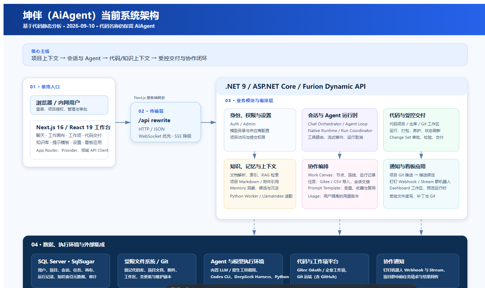
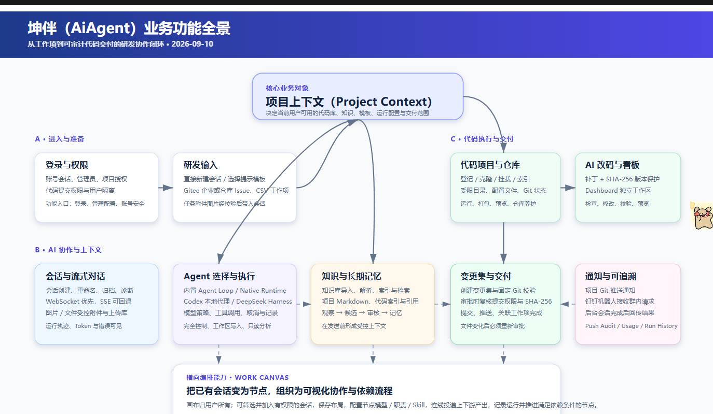
坤伴可以帮助完成什么
坤伴以服务器上已挂载的代码库、已授权项目资料和 Git 记录作为事实基础。它把查询、改动、验证和交付记录连续保留，便于研发与交付共同复核。
| 场景 | 示例提问或操作 | 产出与控制 |
|---|---|---|
| 开发新功能 | 说明业务目标、影响模块、限制和验收条件。 | 先形成方案，再在授权工作区修改并验证。 |
| 规划文件 | 根据当前项目结构、已有 Markdown 和代码事实，整理接口方案或改造计划。 | 形成可引用项目文档；无需改码时使用只读分析。 |
| Bug 与历史差异 | 询问某个 Bug 的原因，或比较某个日期、某次提交前的代码差异。 | 返回关联文件、代码依据、Git 差异和待验证假设。 |
| 简单开发和交付 | 交付人员直接描述范围明确的小改动和验收方式。 | 变更集经授权审批后提交推送，Git 保留证据链供开发复查。 |
| 复杂协同开发 | 交付与开发共同上传最新需求变更文件或图片，以服务器当前代码为准继续开发。 | 在会话或工作画布分工，持续更新上下文并复核测试和差异。 |
快速开始
登录并确认权限
使用管理员分配的账号登录。登录后先确认自己能看到正确的项目；无法登录或没有目标项目时，请联系管理员开通或调整权限。不要在聊天、需求文件或截图中传递密码、令牌和连接串。
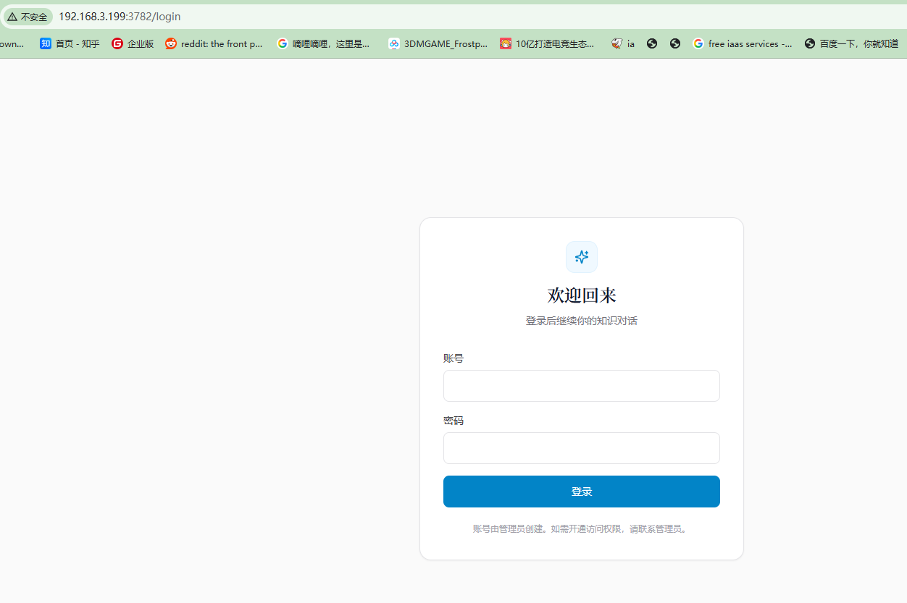
选择项目并发起第一轮协作
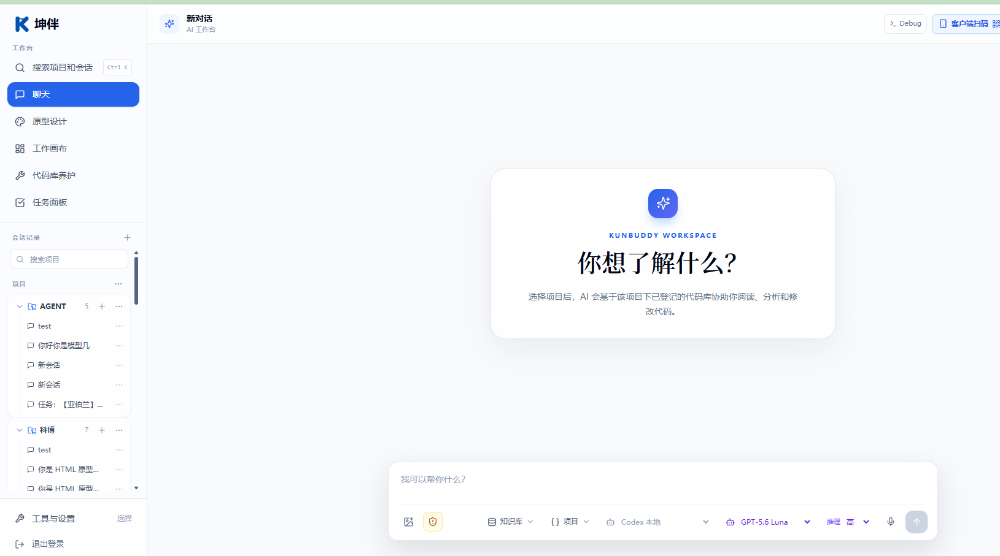
- 登录后确认自己已被分配到目标项目。
- 在聊天中选择项目、Agent、模型和执行权限。
- 描述目标、现状、限制与验收方式；代码问题尽量给出模块或入口。
- 阅读过程、差异和验证结果；需要提交时进入变更集流程。
聊天与代码协作
选择项目和代码上下文
系统只展示当前用户有权访问的项目与仓库。项目不是普通筛选器，而是本次会话的可用资源范围。
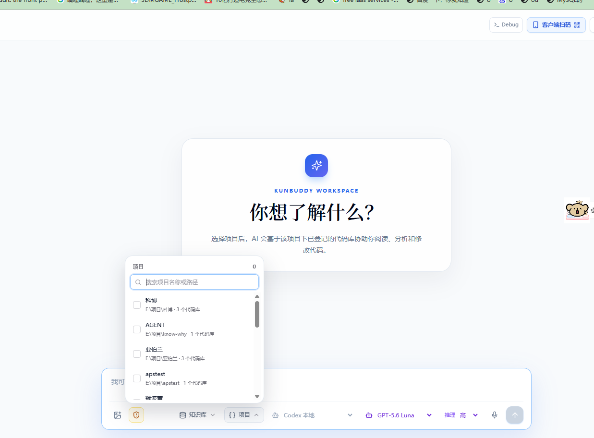
选择 Agent 模型和执行模式
内置 Agent、Codex 本地代理和已配置的 DeepSeek Harness 的能力不同。日常分析优先使用只读；需要修改受信任项目时再选择工作区写入或完全控制。
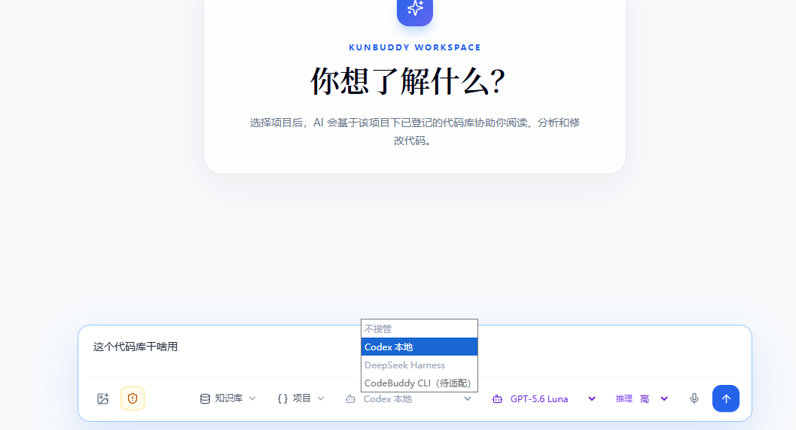
| 执行模式 | 适用场景 | 提醒 |
|---|---|---|
| 只读分析 | 代码理解、问题排查、方案设计、差异审查 | 不能修改工作区 |
| 工作区写入 | 修改当前项目已授权文件 | 发送前确认范围 |
| 完全控制 | 由 Codex 在受信任项目执行操作 | 以服务端账户权限执行 |
提问、过程和附件
建议使用目标、现状、限制和验收描述任务。过程区会显示运行阶段、工具调用和失败信息；长任务不要只按页面等待时间判断结果。

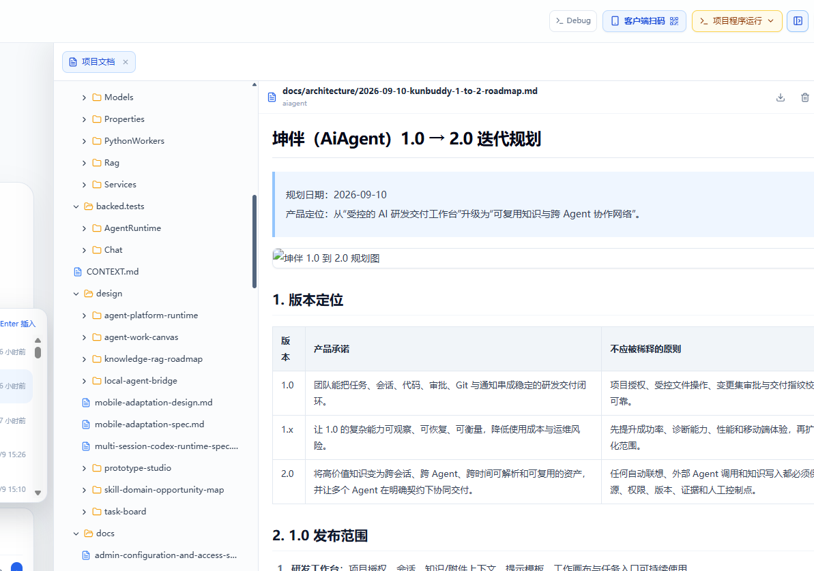
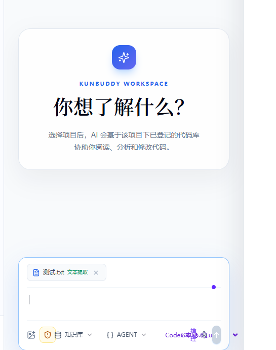
查看差异 拉取和提交
可查看待提交文件、差异和远端状态。重置更新会丢弃本地未提交修改，提交推送应在变更集审批完成后执行。

任务面板与工作画布
从工作项创建会话
任务面板支持本地任务、CSV 导入和 Gitee 工作项或 Issue。关联目标项目后，可以生成预填会话；批量创建时默认只生成草稿，不会自动执行。
在工作画布组织会话
画布将已有会话作为节点。节点可保存模型预设、职责和 Skill；连线可投递上游结果或表达执行依赖。双击节点可打开右侧会话。
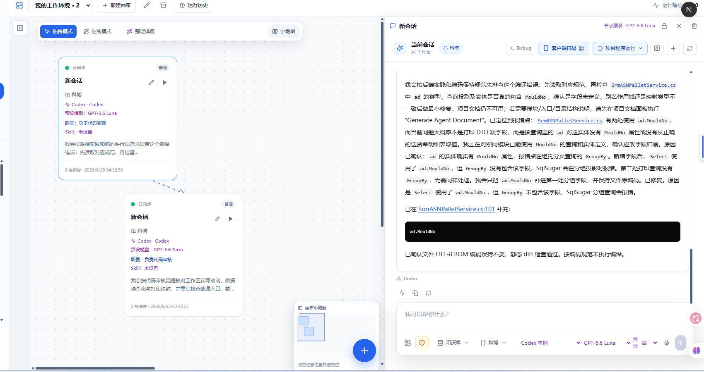
画布连线如何选择
投递关系适用于把上游产出作为下游受控输入。
流程关系适用于建立前置条件和运行推进关系。两种关系都不会绕过原会话的项目权限和运行配额。
项目与代码库管理
一个项目可登记多个仓库、运行配置和可由聊天修改的配置文件。请按实际业务系统划分项目，不要混入无关仓库。
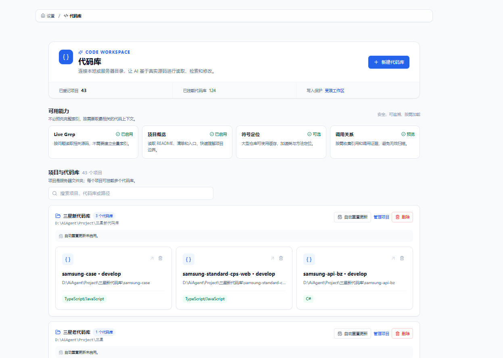
克隆远程仓库
选择项目后填写 HTTPS 地址、分支和本地目录名，并选用已配置的 Git 账号。失败时检查仓库地址、账号权限、网络与目标目录。
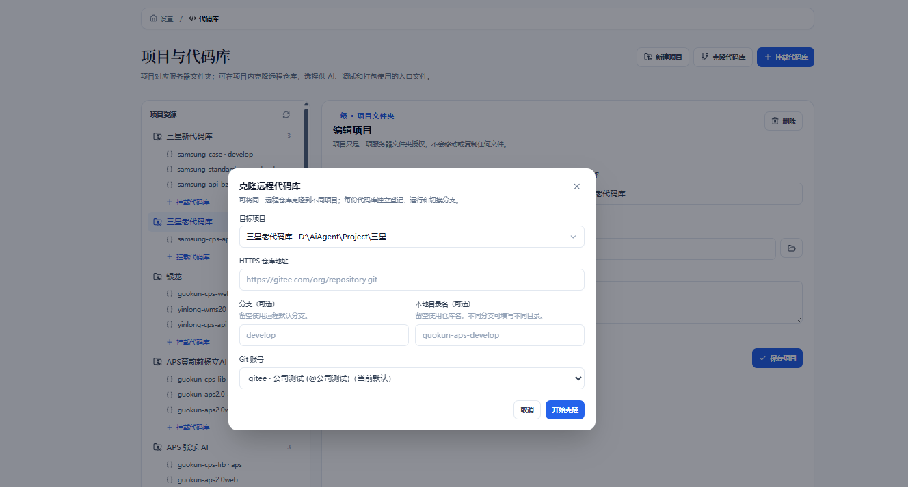
Git 账号
Git 账号用于克隆、拉取和推送。令牌由服务端加密保存，不应在聊天、文档或日志中记录真实令牌。
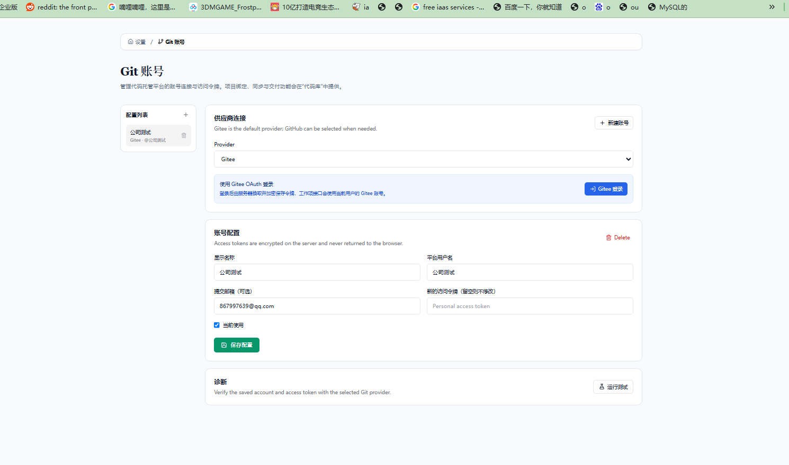
代码交付与仓库养护
正式交付遵循创建变更集、固定 Git 校验、人工审批、SHA-256 再校验和提交推送的顺序。审批后的工作区如果变化，必须重新创建和审批变更集。
| 步骤 | 操作者 | 结果 |
|---|---|---|
| 创建和校验 | 开发人员或项目负责人 | 形成变更摘要、验证状态和待审批记录 |
| 审批 | 具备提交权限的人员 | 确认范围、风险、验证和提交信息 |
| 交付 | 获授权审批人 | 再次复核指纹后提交并推送 |
代码库养护
养护可在独立副本内分析、优化和验证，但不绕过变更集审批；维护分支推送仍需逐次审批。
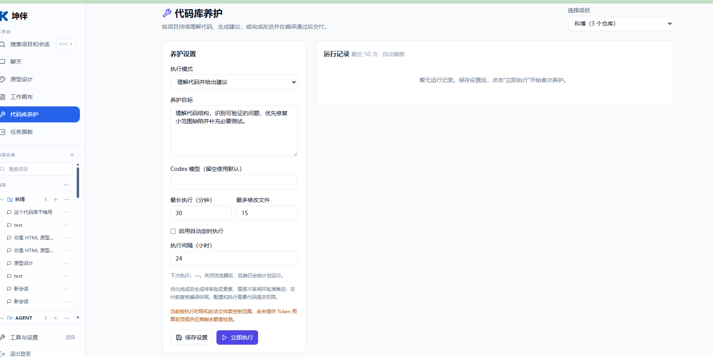
管理员设置
模型和第三方代理
管理员维护模型供应商、模型目录和第三方代理策略。仅启用已经过运行环境验证的模型和 CLI 能力。
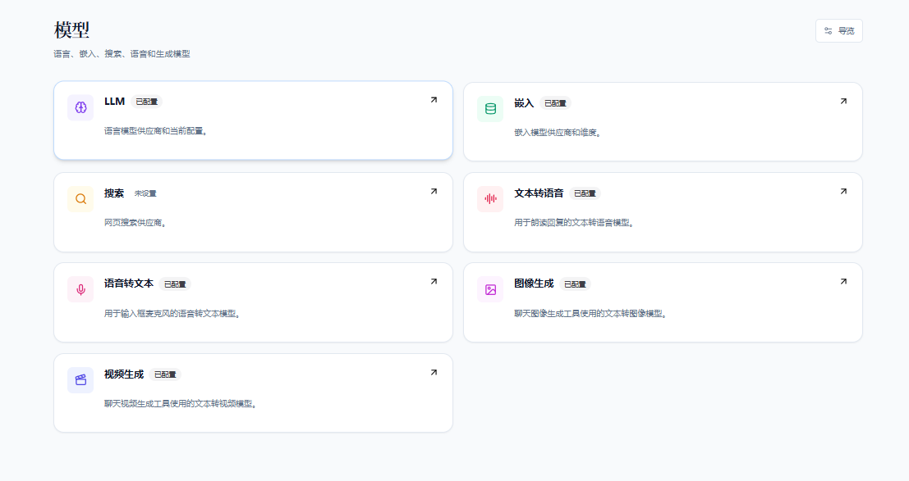
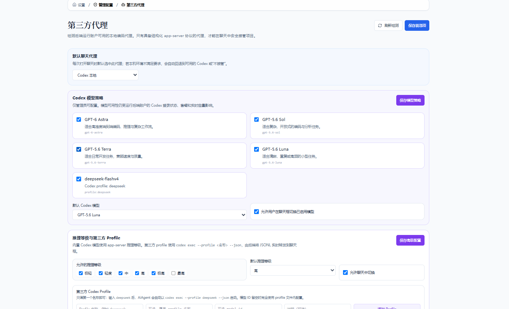
用户权限和用量
用户管理用于分配项目、启停账户、重置密码和配置代码提交权限。流量统计用于审计与容量判断。
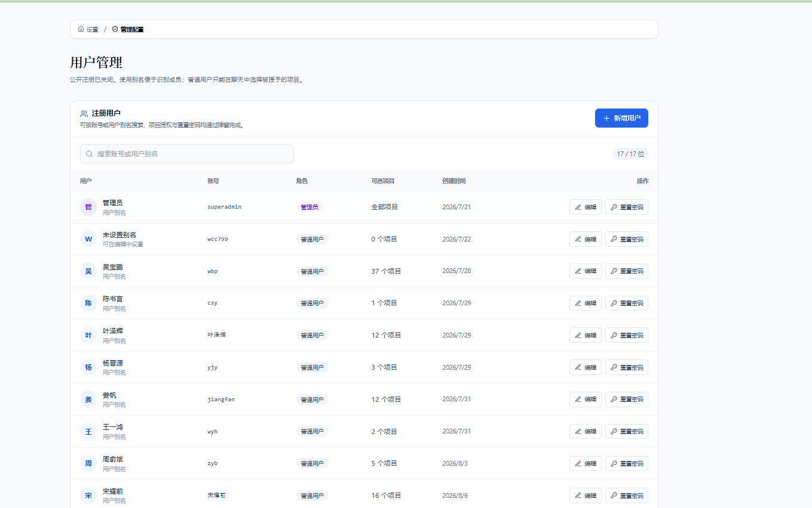
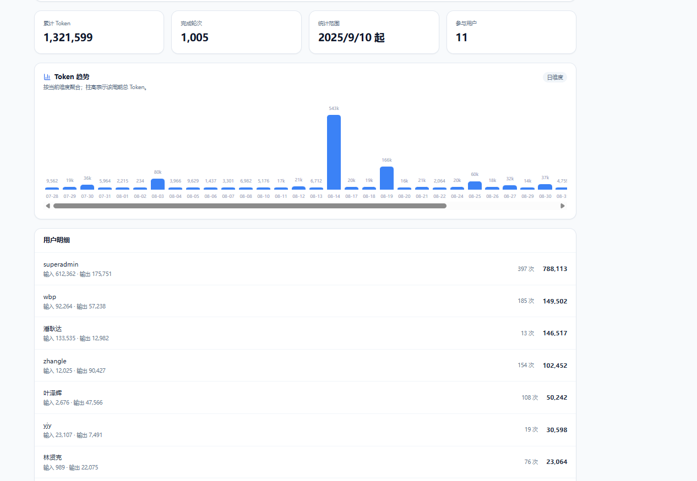
钉钉推送
项目与推送渠道绑定后，Git 推送成功可通知项目群。群机器人收到请求后，将定位项目并在后台执行会话，再回传结果。
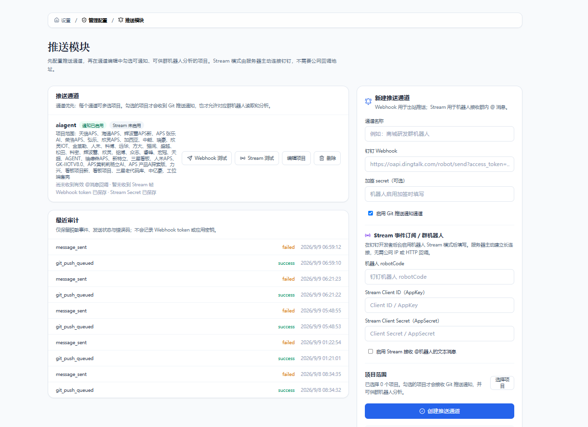
安全边界与常见问题
需要 AI 修改代码
先选择正确项目和仓库，限定问题范围；正式提交走变更集校验与审批。
出现 HTTP 500 或超时
先看实时过程、运行状态和后端日志，确认 Git、CLI 或模型是否已经执行完成，再决定是否重试。
重置更新仓库
该操作会放弃本地未提交修改并拉取远端代码。执行前确认修改已经不需要保留，或已通过变更集交付。
上传附件或引用外部任务
不要上传令牌、连接串或生产敏感数据。外部 Issue、图片和 OCR 文本应作为待验证资料，不应改变工具权限。
架构与产品演进
1.0 的目标是稳定的研发交付闭环，1.x 优先提升可靠性、可观测性、上下文质量和交付效率。2.0 将建设知识资产、kun 资源接口、外部 Agent Adapter 与多 Agent 协同运行时。
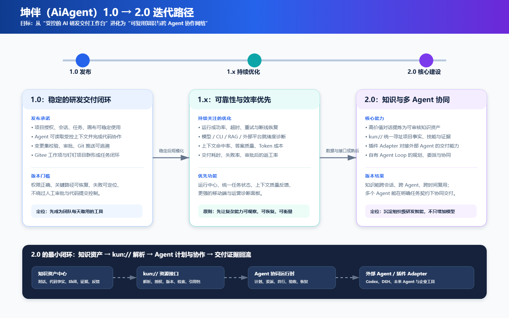
详细说明参见本目录的资料索引和已整理的架构与路线图 Markdown 文档。
知识库与多 Agent 协同建设
坤伴 2.0 的知识库不是孤立资料库，而是将已授权项目中的代码、任务、需求文件、会话结论和交付记录组织为可检索、可引用、可审计的知识资产。CPS Agent 与 APS Agent 在统一项目权限内使用这些事实，提高问题诊断、规划和协同能力。
参考模式
参考 OpenViking 的上下文组织思路，可将资源、记忆与技能作为统一、可浏览的上下文，并按摘要、概览和明细分层加载。坤伴建议使用 kun://project/{project}/code/{repo}/{path}@{commit}、kun://project/{project}/knowledge/{id} 和 kun://user/{user}/skill/{skill} 标识内部资源。以下是坤伴建设规划，并不表示当前已经接入 OpenViking 或开放全部接口。
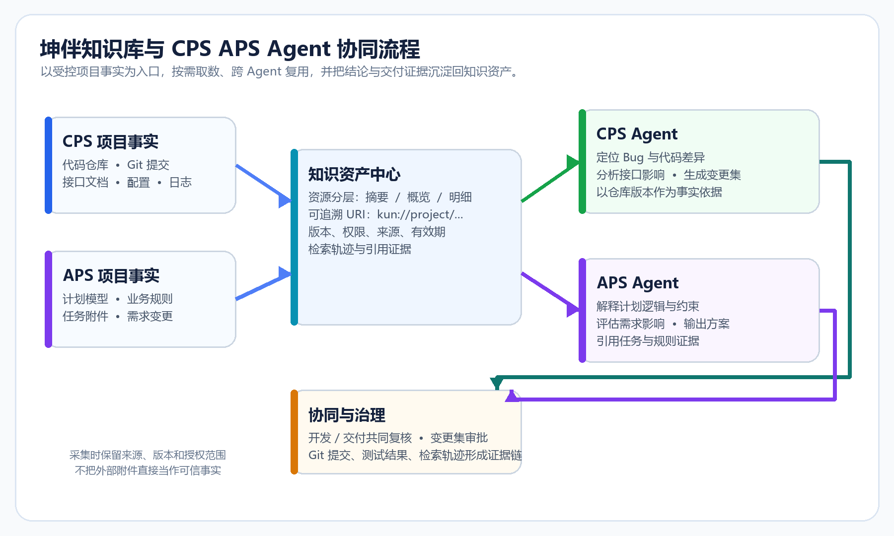
业务示例
| 业务问题 | 知识取用 | Agent 协同与可交付结果 |
|---|---|---|
| CPS 出现 Bug 或需比较历史差异 | 按项目、仓库、分支或提交定位代码、配置、日志和 Git 历史，返回来源与版本。 | CPS Agent 给出证据化诊断、影响范围和变更建议；改码进入变更集与审批。 |
| APS 计划规则变化或需评估影响 | 检索计划规则、任务附件、需求版本、接口约束和历史结论。 | APS Agent 输出约束说明和方案；涉及 CPS 接口时将已引用上下文投递给 CPS Agent 复核。 |
| 交付与开发共同处理复杂需求 | 新需求文件或图片先作为待验证资料挂到项目知识空间，并关联服务器代码事实。 | 画布拆分分析、设计、修改和验证；保留引用、测试、审批和 Git 提交证据。 |
建设路径与验收重点
先完成可控接入，再建设可用知识，然后开展 Agent 协同，最后才扩大自动化与自我演进。每阶段都需要度量覆盖率、检索引用正确率、过期知识命中率、人工采纳率、协同成功率和可追溯交付比例。
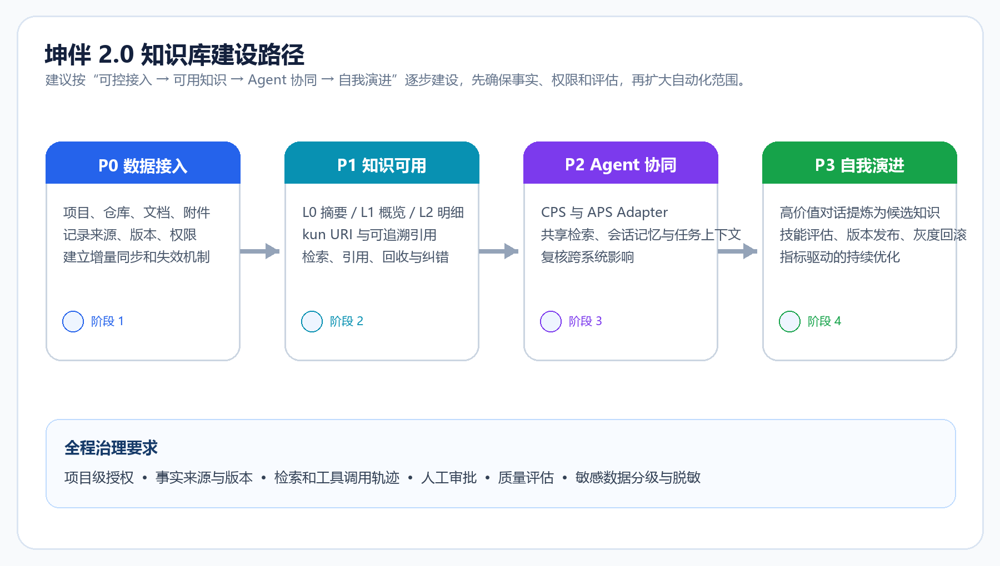
| 阶段 | 优先交付 | 通过标准 |
|---|---|---|
| P0 数据接入 | 项目、仓库、需求、附件和 Git 记录增量采集；记录来源、版本、权限、有效期。 | 每条知识能说明来源和授权范围；权限变化可撤回访问。 |
| P1 知识可用 | 知识分层、kun URI、检索引用、人工纠错和质量评估。 | 回答能给出资源与版本；不确定结论标记待验证。 |
| P2 Agent 协同 | CPS 与 APS Adapter、共享上下文投递、会话记忆和跨系统影响复核。 | 交接不越权，且保留输入、引用、结论与责任人。 |
| P3 自我演进 | 高价值对话提炼、技能候选、灰度发布、回滚和指标闭环。 | 知识或技能进入生产范围前完成评审、评估和回滚验证。 |
参考：OpenViking 官方文档。坤伴将结合当前项目权限、Git 交付流程和部署约束建设自身适配层。